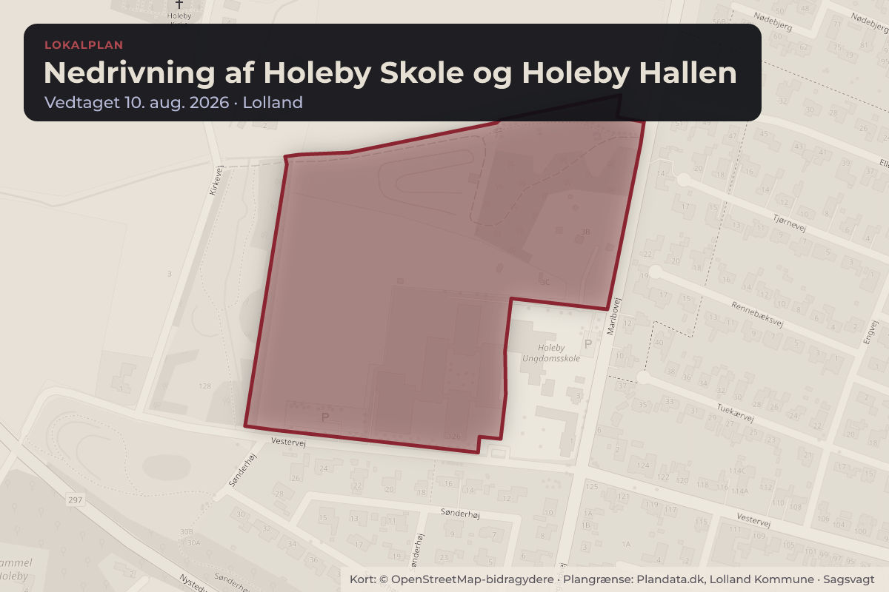
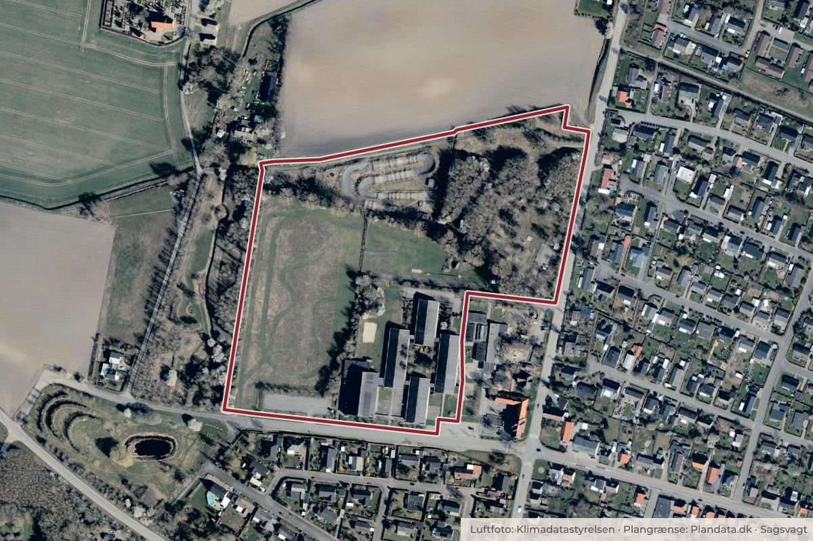

Besluttet 10. august, Klima-, Teknik- og Miljøudvalget, Lolland
Endelig vedtagelse - Lokalplan for nedrivning af Holeby Skole og Holeby Hallen
Byggeri og lokalplanerSkoler og børn

Kort: © OpenStreetMap-bidragydere. Plangrænse: Plandata.dk, Lolland Kommune.

Kort fortalt
- Forslaget
- "Forslag til Lokalplan 360-169 Nedrivning af Holeby Skole og Holeby Hallen
- Der i høringsperioden afholdes informationsmøde, hvor der orienteres om
- Arealet, der er beliggende i landzone, overføres til byzone.
- Hvem
- Klima-, Teknik- og Miljøudvalget, Lolland Kommune
- Hvornår
- Mandag 10. august 2026
- Status
- Besluttet. Godkendt. Behandlingsplan Klima-, Teknik- og Miljøudvalget.
Er noget forkert her? Skriv til os
Læs hele sagen Kommunens egen tekst
Sagsfremstilling
Lolland Kommune ønsker at rive Holeby Skole og Holeby Hallen ned. Nedrivningen skal ske på
baggrund af en lokalplan, da bygningerne, grundet deres størrelse, placering og betydning, vil
medføre en væsentlig ændring i det bestående miljø, samt at nedrivningen har betydning for
borgerne i området og Holeby som helhed.
"Forslag til Lokalplan 360-169 Nedrivning af Holeby Skole og Holeby Hallen" er vedlagt som
Bilag 1. Lokalplanens overordnede formål, er at muliggøre nedrivning af eksisterende
bebyggelse, herunder skolebygningerne og hallen, på ejendommen matrikelnummer 1d, Holeby
By, Holeby, samt sikre at området efter nedrivning gives et grønt udtryk, som gør at området
bl.a. kan anvendes rekreativt.
Lokalplanen har også til formål at give mulighed for, at området fortsat kan anvendes til offentligt
formål, herunder større rekreativt område og sports- og idrætsanlæg, samt sikre områdets
biodiversitet i form af en blanding af træer, buske, lysåbne arealer og vand. Der skal samtidig
være mulighed for at biodiversiteten kan blive endnu bedre. Området skal være offentligt
tilgængeligt.
Lokalplanen giver kun mulighed for byggeri i begrænset omfang. Lokalplanen skal derfor også
sikre at den fremtidige bebyggelse indpasses i området, og at der er vejadgang til
lokalplanområdet.
Lokalplanområdet afgrænses mod øst af Maribovej, mod syd af Vestervej, mod vest af Holeby
bypark og mod nord af åbne marker.
Lokalplanområdet er på 9.2 ha, hvor størstedelen af området er beliggende i byzone og en
mindre del i landzone. Arealet der er beliggende i landzone, vil med den endelige vedtagelse af
lokalplanen blive overført til byzone. Lokalplanområdet er opdelt i fem delområder.
”Forslag til Lokalplan 360-169 - Nedrivning af Holeby Skole og Holeby Hallen” kan ses i en digital
udgave på https://lolland.viewer.dkplan.niras.dk/DKplan/DKplan.aspx?LokalplanId=478
Økonomi
I budget 2024 blev der afsat penge til nedrivning af skolen, og i budgetforliget for 2025 er
der afsat penge til nedrivning af Holeby Hallen.
Planmæssige forhold/Lovgrundlag
Lovgrundlag
Planloven og miljøvurderingsloven
Kommuneplan 2025-2037
”360-O16 Offentligt område ved Holeby Skole”, der udlægger området til offentlige formål –
skole, børneinstitution, sportshal, sportsplads, offentlige friareal og evt. tennisbane,
”355-D3 Offentligt område i Holeby”, der udlægger området til offentlige formål –
børneinstitution og dennes friarealer, og
”355-B18 Boligområde i Holeby vest", der udlægger området til boligområde til åben-lav og
tæt-lav bebyggelse.
Lokalplanen er i overensstemmelse med kommuneplanen.
Lokalplaner
Lokalplanområdet er omfattet af to eksisterende lokalplaner:
Lokalplan 355-8 Område til offentlige formål, Holeby skole m.m. vedtaget af Holeby
Kommune den 20. september 1979. Lokalplanen fastlægger området til offentlige formål,
herunder skole, børneinstitutioner, sportsplads m.m.
Lokalplan 355-11 vedtaget af Holeby Kommune den 13. oktober 1980. Lokalplanen
fastlægger området til offentlige formål, aldersintegreret børneinstitution.
Lokalplan 355-11 ophæves i sin helhed og Lokalplan 355-8 ophæves delvist, indenfor det
område, som er omfattet af nærværende lokalplan, i forbindelse med Lolland Kommunes
endelige vedtagelse af lokalplanen.
Zoneændring
Et mindre areal, i den nordøstlige del af lokalplanområdet, vil i forbindelse med endelig
vedtagelse af lokalplanen blive overført fra landzone til byzone, så hele lokalplanområdet er
beliggende i byzone. Dette bl.a. fordi, at kommuneplanrammen "355-B18" fastlægger, at hvis
arealer inden for rammen lokalplanlægges, skal arealerne overføres til byzone.
Miljøvurdering
Ifølge miljøvurderingsloven skal der foretages en miljøvurdering af planer, hvis gennemførelse
kan få væsentlig indvirkning på miljøet.
På baggrund af en miljøscreening har Lolland Kommune efter miljøbeskyttelseslovens § 10
vurderet, at der ikke skal foretages en miljøvurdering af lokalplanen, idet planen ikke vurderes at
danne grundlag for byggeri og anlæg, der medfører en væsentlig påvirkning af miljøet, hverken
indenfor eller udenfor planområdet. Lolland Kommune har i vurderingen lagt vægt på, at planen,
der primært er en nedrivningsplan, omhandler et areal på ca. 8.6 ha beliggende i udkanten af
Holeby, der dækker et areal på ca. 200 ha. En stor del af området er i dag et grønt rekreativt
område, herunder et område på ca. 2 ha med et lavtliggende græsareal og ca. 2 ha med
beplantning i form af større træer i varierende art og alder. Beplantning i delområde B sikres i
planen og det lavtliggende græsareal i delområde C fastholdes som lysåbent areal.
Der er i området gennemført en omfattende flagermusundersøgelse, der viser en stor generel
aktivitet i området, men ingen aktivitet i bygninger. Dette er konkluderet efter undersøgelse af
alle bygninger og loftarealer.
Samlet set vurderes planen derfor ikke at medføre væsentlige påvirkninger på miljøet.
Det er samtidig vurderet, at planen ikke påvirker et internationalt naturbeskyttelsesområde. Det
nærmeste Natura 2000-område (N177 Maribosøerne) ligger i en afstand af ca. 5 km. fra
lokalplanområdet. Lokalplanområdet ligger i yderkanten af et bebygget område (Holeby by), der
gennemskæres af større veje og nedrivningen vurderes ikke at påvirke Natura 2000 området.
Høring/Udtalelse
Forslag til lokalplan skal ifølge planlovens regler sendes i min. 4 ugers offentlig høring.
Administrationen anbefaler, at der i høringsperioden afholdes informationsmøde, hvor der
orienteres om nedrivningen og mulighederne for området.
Administrationen anbefaler desuden, at den offentlige høring forlænges fra 4 uger til 6 uger, hvis
der skal afholdes et informationsmøde. En forlænget høringsperiode vil sikre tilstrækkelig tid til
planlægning og afholdelse af informationsmødet samt give borgerne bedre tid til at indsende
eventuelle høringssvar.
Indstilling
Administrationen indstiller, at Klima-, Teknik- og Miljøudvalget beslutter
1. at "Forslag til Lokalplan 360-169 Nedrivning af Holeby Skole og Holeby Hallen
godkendes og sendes i 6 ugers offentlig høring.
2. at der i høringsperioden afholdes informationsmøde, hvor der orienteres om
nedrivningen og mulighederne for området.
3. at arealet, der er beliggende i landzone, overføres til byzone.
Tidligere beslutning
Beslutning fra Klima-, Teknik- og Miljøudvalget, den 13. april 2026, punkt 6:
Godkendt som indstillet.
Beslutning
Godkendt.
Behandlingsplan
Klima-, Teknik- og Miljøudvalget.
Kilde: Lolland Kommune, Klima-, Teknik- og Miljøudvalget, referat fra mødet mandag 10. august 2026, punkt 16. Læs den originale sag hos kommunen.